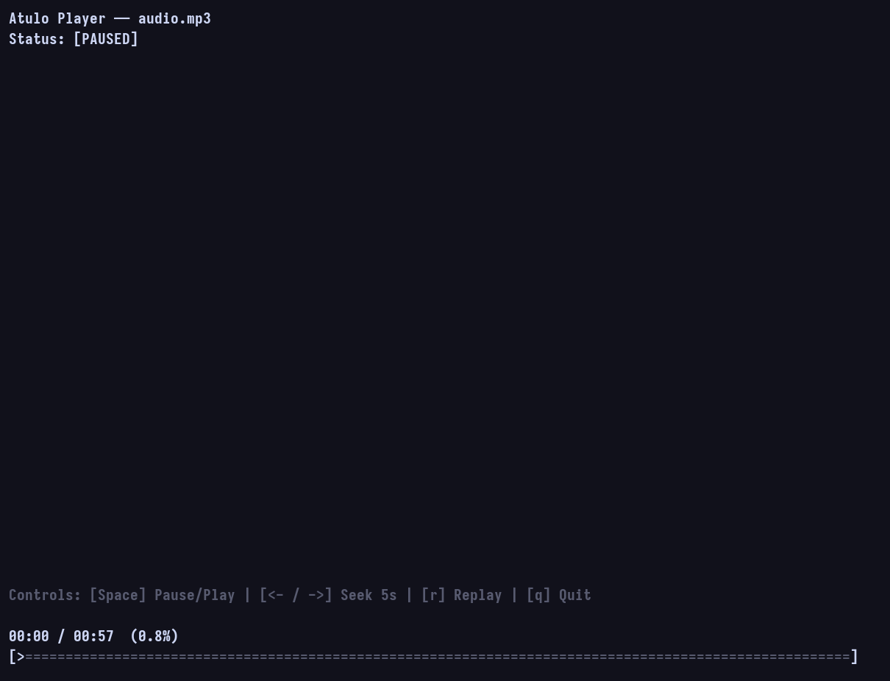

01 / FORMATS
MP3
WAV
OGG
OPUS
FLAC
AIFF
02 / INTERFACE
Atulo works directly from the terminal. Its interface is built with ncurses and its audio support comes from the embedded miniaudio.h library.

03 / CONTROLS
04 / BUILD
BUILD
$ make clean buildINSTALL
$ sudo make clean installUNINSTALL
$ sudo make uninstall05 / REQUIREMENTS
GCC
ncurses
miniaudio.h
EMBEDDED